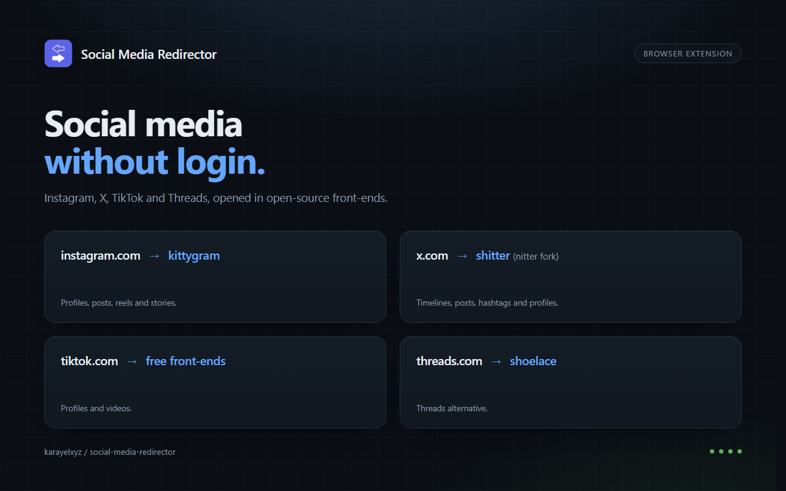

instagram.com→kittygram
Posts, reels, stories, tagged and profiles.
Read Instagram, X, TikTok and Threads without an account. Every page you open is forwarded to a front-end that serves it without a login wall.

instagram.com→kittygram
Posts, reels, stories, tagged and profiles.
x.com→shitter (nitter fork)
Timelines, posts, hashtags and profiles.
tiktok.com→free front-ends
Profiles and videos.
threads.com→shoelace
Posts and profile pages.
Download the build from GitHub releases, then load it by hand:
chrome://extensions → Developer mode → Load unpacked for the unzipped folder, or drag the .crx onto that page.about:addons, click the gear icon → Install Add-on From File and pick the .xpi.Hand-installed builds do not update themselves.
Not part of the extension: a bookmark that forwards the page you are on, one click at a time.